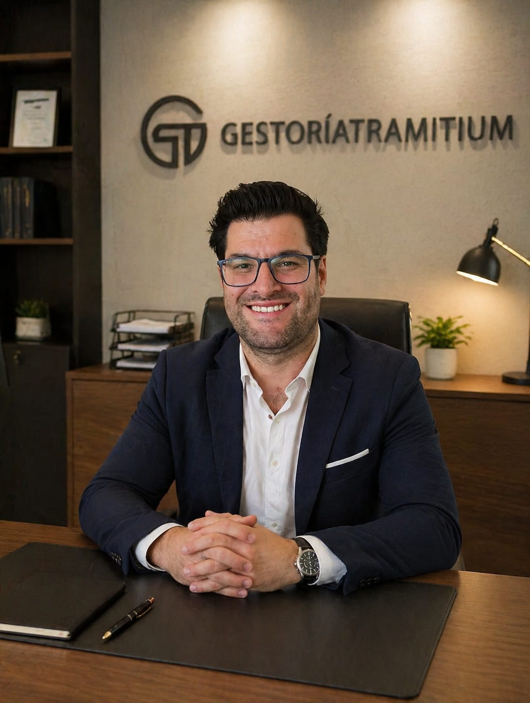

Quiénes somos
Experiencia económica aplicada a una gestoría más clara y más humana
Tramitium está liderada por su CEO, economista con más de 20 años de experiencia profesional. La firma nace para simplificar gestiones registrales que suelen ser lentas, técnicas y poco transparentes, convirtiéndolas en procesos ordenados, seguros y fáciles de seguir.
Nuestro compromiso: precisión documental, atención cercana y una gestión responsable de cada expediente.

Cómo trabajamos
- Analizamos cada caso antes de iniciar el trámite.
- Presentamos la documentación con criterio técnico y seguimiento claro.
- Mantenemos una comunicación directa durante todo el proceso.
Qué nos diferencia
La combinación de experiencia económica, conocimiento administrativo y vocación de servicio permite a Tramitium acompañar tanto a particulares como a profesionales y empresas con una mirada práctica: menos fricción, menos incertidumbre y más control.